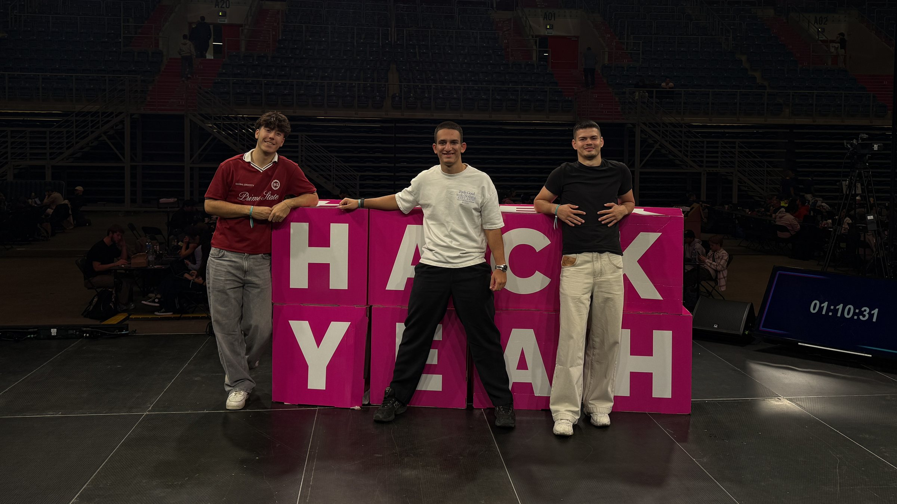

Exertion, especially swimming
A daily tip for your type: warm up, avoid sudden all-out efforts, and never swim alone.
For people living with Long QT syndrome
Celia.ai checks every medicine against your heart, keeps an eye on your heart rate through your watch, and tells strangers exactly what to do when you can't.
Saturday, 3 October
Good afternoon, Ola
Your 14:00 nadolol is due soon. Want me to log it with you?
Exertion, especially swimming
A daily tip for your type: warm up, avoid sudden all-out efforts, and never swim alone.
Sudden loud sounds
An alarm clock, a slammed door. Celia flags a racing heart while you're at rest and asks if you're OK.
Rest and sleep
The risk comes when the heart runs slow. A very low rate at night wakes you with a gentle tone.
Every one with its risk from the CredibleMeds categories, its brand names in Polish and Bulgarian, and what to ask your doctor about instead.
A brand name, a generic name, a Polish or Bulgarian box. Celia finds the ingredient and gives you an answer from the list, with no signal needed at the pharmacy counter.
Type
Klacid, Fromilid, klarytromycyna, кларитромицин. Brand names and other-language generics all lead to the same ingredient.
Scan
EAN and GS1 codes on the box map straight to the ingredient inside, before you've read a word of the label.
Photograph
The phone reads the text on the box, on the device, and finds the ingredient hiding in it.
The answer
Colour, shape and word, the reason in plain English, what to ask your doctor about instead, and a check against everything you already take.
Medicines
TODAY'S DOSES
All ›MY MEDICINES · 3
Hold the barcode inside the frame
Klacid → clarithromycin
Listed as known to prolong QT. It also slows how your body clears some other medicines.
Ask your doctor about
CredibleMeds-derived list · Not a medical device. Always ask your doctor or pharmacist.
Colour, shape and word, so a verdict reads for colour-blind eyes and under stress. If Celia can't identify something, it says so. Unknown is never shown as safe.
Clarithromycin. Avoid; ask your doctor.
Ofloxacin. Check with your doctor first.
Metronidazole. Risky with low potassium or other drugs.
Ibuprofen. Not on the list, which still isn't a guarantee.
Couldn't identify. Type the name instead?
Tap the orb and ask out loud, the way you'd ask a pharmacist. You see your own words, each check the agent makes, and the answer growing as it's spoken. The verdict card underneath comes from the medicine list; if the model's words ever disagree with it, they're thrown away.
Your 14:00 nadolol is due soon. Want me to log it with you?
ASK ME
Can I take Klacid for my sinus infection? How was my heart this week?OR GO STRAIGHT TO
I'm listening
Show conversation
Tap to talk
The ring is a gauge between your own limits, tuned to your genotype. Near a limit it turns amber, past it the watch asks if you're OK, and if you don't answer it sends for help.
Never QT, never an ECG. The watch shows what it measures, and marks what it simulates.
SOS and 112 come first. Then one big tile for whoever is helping you, and a medical card a paramedic, a pharmacist or a stranger on the tram can read in seconds. Try the languages.
Emergency
NEARBY
Test SOS (nothing is sent)
Ola Nowak
Long QT syndrome (LQTS) — inherited heart rhythm disorder
Do NOT give QT-prolonging drugs (e.g. ondansetron, macrolide or quinolone antibiotics, haloperidol, methadone). Check every drug at crediblemeds.org.
Current medicines nadolol 40 mg daily
A guide for bystanders
Three steps, a call button and a CPR metronome at 110 a minute, like the one beating here.
Shared with a link, sealed on your phone
Cards and reports are end-to-end encrypted. Only someone holding the full link can read them.
Pick who you're seeing and Celia builds the brief from your own records: heart rate, medicines and how you felt. The AI summary is labelled and sits apart; you check it before you share.
A calm month. Worth asking about the dizzy spell and an alternative to clarithromycin.
64 bpm · 3 Oct
Recorded on the HarmonyOS emulator and a Huawei watch. Simulated heart data is labelled as simulated, on screen and here.
Written in ArkTS and ArkUI for API 20, phone and watch. The safety core needs no network, and anything that does go online is optional and listed.
Offline core
Medicine checks, the emergency card and your profile live on the phone, encrypted.
A ledger of every request
Each time the phone goes online, it's listed on the phone for you to see.
No keys on the phone
Model keys stay on the backend. Names and contacts are never uploaded in the clear.
Deterministic verdicts
The same medicine always gets the same answer, from data you can trace to a source.

media/team.jpg